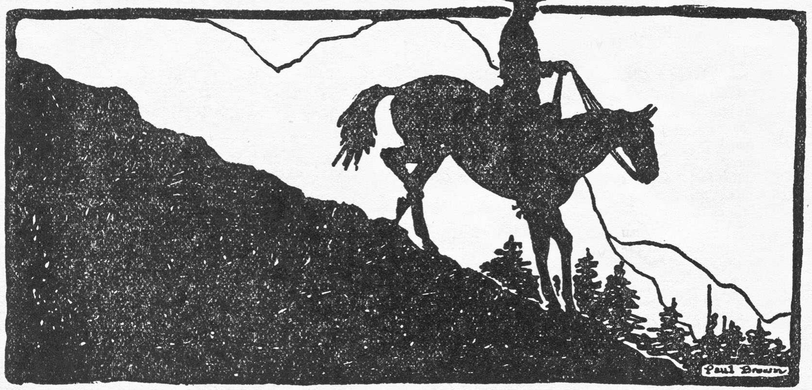
FIRES OF FATE
“The Proof of Progress,” etc.
IT TOOK A BUNCH OF CROOKS ALONG THE CANADIAN BORDER QUITE A LONG TIME TO LEARN THEIR LESSON—THAT YOU CAN BUCK THE “MOUNTIES” JUST SO LONG, BUT THEY GET YOU IN THE END. BUT THEY DIDN’T KNOW THAT THERE WAS A MONTANA COWPUNCHER IN THE RANKS OF THE R. N. W. M. P.
CHAPTER I. THE RESIGNATION
“Monk Magee is so doggone low-down that he could put on a plug-hat and walk under a snake,” declared Bud Conley seriously, as he turned in the doorway and looked back at Inspector Grandon of the Royal Northwest Mounted Police, who was seated at a desk, looking indifferently at a paper which Bud had just placed before him.
Grandon’s eyebrows lifted a trifle, but he did not look at Bud, as he said crisply, “Perhaps that is true, Conley; still, he is no fool.”
“You mean that he’s got brains?” asked Bud. “Hell! All Magee’s head is good for is to keep his ears from rubbin’ on each other.”
Grandon’s thin lips twisted slightly. Coney’s quaint sayings amused him at times, although he hated to admit it. Conley’s indifference to discipline, absolute disregard for his superior officers, rasped Grandon to the quick; and he was not at all sorry that Conley was no longer a member of the R. N. W. M. P.
“I reckon I can consider m’self fired, can’t I?” queried Bud, as he slowly rolled a cigarette.
“Yes. You are no longer a member of the force, Conley.”
“And I never even got m’self drunk like a gentleman,” wailed Bud. “One big shot of wobble-water and I went out and lost m’ fly-wheel. Hell’s delight, but that Magee hootch would make a moth-miller lick a hen-hawk!”
“And there was that complaint from Beaudet,” reminded the inspector softly and meaningly.
Bud whirled quickly and came back to the desk.
“That was a damn lie!” he snapped, as he leaned forward, his gray eyes boring into the startled face of the officer.
“I’m no longer a policeman, Grandon—remember that. I’ve handed in m’ resignation, you’ll notice. I may only be a cowboy from Montana, as some of the redcoats have said behind my back, but I’ve got a mother some’ers and I used t’ have a sister.”
The anger faded from Bud’s eyes and a wistful expression crossed his seamed face, as his mind seemed to flash back through time. Then he shook his head and looked at the inspector.
“Hold your temper!” ordered the inspector coldly. “I am not in the habit of being——”
“Aw-w-w, hell!” interrupted Bud wearily. “I dunno how I’ve stood this as long as I have; danged if I do.”
He turned away and walked back to the door, looking at the thumb and index finger of his right hand, which were badly stained with ink. Bud had little education, and the writing of his resignation, brief as it was, had been a man-sized task.
Bud was of medium height, slim-waisted, long-armed. His pugnacious jaw, tilted nose and mop of unruly hair gave no lie to his ancestry. He hated discipline, petty details, and his blood inheritance from a line of Irish ancestors rebelled and his tongue snapped in spite of punishment. Bud had been a top-hand in cow-land, which meant ability—plus.
Just now Bud was both mad and muddled. The day before he had been sent out to try and locate the party or parties who had been selling whisky to a bunch of Indians.
Liquor was taboo, even to the whites, but the Mounted had never been able to stop its import. The Indians had secured a large quantity—large enough to incite them to wondrous deeds—with the result that a number of them had made a pilgrimage to the Happy Hunting ground.
The little town of Kingsburg was a sore spot to the Mounted. Here lived Monk Magee, a big, burly, bull-necked individual, who hated the Mounted, and was a never-ending source of irritation to them. The town’s close proximity to the border of the United States made it a useful place for the outlaws of both sides of the boundary. To them it was but a mythical line, to be crossed at will; a line which gave them sort of a sanctuary and blocked the efforts of law enforcement.
Magee was proprietor of a hotel—the Magee Rest. No one, or at least very few, people ever put up at his hostelry; but Magee waxed prosperous and never complained over poor business. The border element came to Magee’s place, and he was usually surrounded by a bunch of questionable characters. But the Mounted were unable to fasten horse or cattle stealing or liquor running onto Magee.
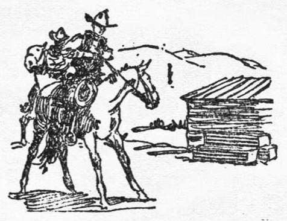
The day before his forced resignation Bud had gone to Kingsburg, hoping for something to happen to break the monotony—and it did. At Magee’s place Bud ran into two punchers from just over the Montana border, and Bud knew these two men as rustlers. They knew Bud, but did not recognize him.
The place was orderly enough, as far as Bud could see, but he was, as he expressed it, “a little leary of the whole outfit.” Magee was outwardly friendly to Bud, and talked to him about the Indian liquor selling trouble.
“I sabe how they suspect me,” said Magee confidentially, “and mebbe I don’t blame ’em. I’ve got a little good liquor, Conley—for my friends.”
“Thasall right,” admitted Bud. “I ain’t ridin’ yuh, am I, Magee? ’F yo’re sellin’ hootch to the reds, you’ll get yours sooner or later. The Mounties always get their man, yuh know.”
“Sure, I sabe that, Conley, but just t’ show yuh that I ain’t concealin’ anythin’, I’ll ask yuh to have a little drink from my private stock. Whatcha say?”
“I’ll say that she’s a long dry spell,” said Bud.
Magee went into the rear room of the place and came out with two glasses of liquor. There was no attempt at concealing anything. The liquor was very strong and of a peculiar taste, but Bud did not feel that anything was wrong until Magee’s face and form began to separate into many more Magees; so many that the room seemed densely populated with Magees.
Then the Magee army and everything else faded out and Bud’s senses with them. When Bud came back to his senses he found himself at headquarters, his clothes whisky soaked, a bottle of liquor in his pocket and disgrace staring him in the face.
From the lips of old Angus MacPherson Bud found out that he had been found on the road, just at the outskirts of Kingsburg, drunk as a fool. And with him was Marie Beaudet, a young half-breed girl, just as drunk as he.
He was also informed by MacPherson, who had no sympathy for anybody, that Joe Burgoyne, who was engaged to Marie Beaudet, had sworn to kill him on sight—if old Louis Beaudet did not beat him to it. Joe was a gambling half-breed, with a hawk-like face, a lean, lithe body and uncanny ability with a knife.
Bud scowled deeply and it seemed to please MacPherson immensely.
“And Bur-r-goyne will do it, too,” declared the Scot ominously. “He’s a de’il with a knife. And don’t ye over-r-look old Louie and his shotgun.”
“Yuh sure can think of a lot of sweet things, you damn old cockle-burr,” groaned Bud.
MacPherson grinned maliciously. “And as for-r-r Miss Nor-r-rah Clarey——”
MacPherson ducked quickly and Bud’s boot-heel hit the wall behind him.
“Leave her name out of it!” snapped Bud. “I don’t know a blamed thing that happened, Mac.”
“Ye’ll no deny ye were drunk, will ye?”
“On one drink?” snorted Bud.
“It must ha’ been a lar-r-ge one, lad.” MacPherson shook his gray head wonderingly. “Mebbe ye were usin’ a washtub, eh?”
Bud shook his head and spat dryly. “My tongue is plum corroded, Mac. What did the inspector say?”
MacPherson shook his head slowly. “What could he say, lad? Ye have disgraced the for-r-ce; so he says. Don’t ye know that the Royal Northwest Mounted——?”
“Aw, shut up!” wailed Bud. “What don’t I know about rules and regulations? Ain’t I had ’em fired at my head ever since I dressed myself up like a Royal chinook salmon and swore to never pull a gun except in self defense? I didn’t ask yuh for a ruling, you long-faced old leather-knees—I asked yuh what the inspector said.”
“I’ll not repeat it,” declared MacPherson. “He sent McKay out on your detail and told me to sober ye up long enough for-r-r ye to answer a few questions. Dr. Clarey was the one that found ye—him and Joe Burgoyne.”
“Yeah?” Bud grimaced and scratched his touseled hair nervously. “Clarey, eh? What was he doin’ up there?”
“A man got half killed in a brawl, so he says. Burgoyne came after Dr. Clarey, and they found ye maudling drunk, and with ye was the little Marie, and she was——”
“Aw, shut up,” snorted Bud, as he got to his feet. “I’m goin’ in and have it over with. If Joe Burgoyne sticks a knife into me I hope it’ll be in the stummick; I’ve no use for that part of me.”
Bud kicked the door shut behind him and went to face Inspector Grandon; after which he wrote his resignation. Grandon had said little during the session. Bud denied everything except taking the drink of liquor, but the evidence was all against him.
But just now Bud was not worrying about his discharge nor about disgracing the force; he was thinking about little Norah Clarey. She was a proud little brown-eyed miss, with raven tresses. Black Irish, MacPherson called her. And Bud’s whole future was built around Norah Clarey, whether she knew it or not. Now, he knew that she had heard from her father of what he had done, and, if he had not misjudged her, she would never speak to him again. All of which caused Bud to have a sinking sensation in the pit of his stomach, along with the rest of his internal misery. The fact that both Burgoyne and old Louis Beaudet desired his scalp did not worry Bud in the least.
Old Louis was the proprietor of the store at Eagle Nest, the R. N. W. M. P. headquarters. There was little more than the store and the buildings used by the Mounted, but old Louis did a fair business. Mrs. Beaudet was a Cree squaw, very fat and very indifferent.
Eagle’s Nest was too far South for Louie to get any of the fur trade, but the outlying cattle ranches, prospectors, etc., gave him a fair trade. But Louie was the type of Northern trader, canny as a Scot, but caring little beyond his immediate needs.
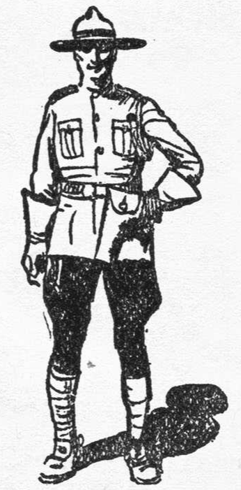
Marie was a little, black-eyed thing, adored above everything by old Louie, whose gray beard swept almost to his waist and whose whisper was almost a roar. He was a typical old French-Canadian, quick to answer, quick to forgive and with the strength of a grizzly bear.
Bud could see the front of the store from where he stood on the headquarters steps. Directly across from him was the barracks building, and as Bud glanced that way a tall, rangy policeman came out of the building and crossed toward him. He came in close before he spoke.
“What did the inspector have to say, Conley?”
“I didn’t listen much,” grinned Bud, “but I got enough to know that he didn’t need me any longer, Henderson.”
“And you resigned?”
“Well,” drawled Bud, “I didn’t want to disappoint him.”
“That’s too bad,” sighed Henderson.
“Don’t bawl about it,” begged Bud. “’F there’s anythin’ I hate it’s t’ see a policeman cryin’. I reckon I can bear m’ burden.”
Henderson smiled. He had been Bud’s bunkie and liked Bud, in spite of the fact that Bud laughed at the traditions of the Royal Mounted. Henderson was heart and soul in the service.
“Going to leave this country, Conley?” he asked.
“I—reckon—so—mebbe.”
Henderson glanced toward Beaudet’s store and stepped in closer to Bud. “Keep your eyes open, Conley. Beaudet is half crazy and Burgoyne is as venomous as a snake. Dr. Clarey has been trying to talk sense into both of them, but I don’t think he has done much good.”
“Henderson, do you think I got that girl drunk?”
“I don’t want to, Conley.”
“Then yuh do,” said Bud quickly, “but it don’t make no never mind.”
He turned, as though to walk away from Henderson, but stopped. Two horses were coming down the street; two saddled horses, without riders, and one of the saddles had turned and was under the horse’s belly, greatly impeding its progress.
“That is McKay’s horse—that roan!” exclaimed Henderson, naming the trooper who had replaced Bud. “The other belongs to Cree George, McKay’s packer. I wonder what has gone wrong.”
They caught the horses and led them up to the front of the headquarters. Bud removed the saddles, while Henderson reported it to Grandon. An examination showed that neither horse had been injured.
“Broke loose and came back,” was Grandon’s comment.
“Which don’t fit the case at all,” declared Bud. “McKay always uses a tie-rope and so does the Injun.”
Grandon looked curiously at Bud. “Are tie-ropes unbreakable?” he asked, a trifle vexed.
“No,” Bud shook his head slowly, “but it ain’t noways reasonable t’ suppose that both of them horses would break loose in such a way as t’ leave their ropes; and a tie-rope don’t usually break in the neck-loop. Ain’t neither horse got a rope nor a rope-burn. Nawsir, them two broncs were untied.”
“What do you think, Henderson?” asked Grandon.
“I think that Conley is right, sir.”
“Possibly. You will go at once to Kingsburg and try to get in communication with McKay, Henderson.”
Henderson snapped a salute, whirled on his heel and started for the stables. Bud turned his back on Grandon and began rolling a cigarette.
“Do yuh know what I think?” asked Bud slowly.
Grandon seemed to have little interest in what Bud thought, and did not reply.
“I think that Kingsburg is a hell of a place to send one officer, Grandon.”
“Yes?” Grandon’s voice held a trifle of a sneer, “but McKay does not drink.”
“Then he won’t get off as cheaply as I did.”
“What do you mean, Conley?”
“I mean that there’s somethin’ queer about that danged place. A week ago I seen somethin’ that I never reported to you, Grandon. I was comin’ down past there at night and I looked it over from that knoll back of town. I seen at least twenty men go into Magee’s place.
“It kinda struck me as bein’ queer; so I rode down and went in. I found Magee and one Injun in there. Magee offered me a drink of hootch, but I didn’t take it. There was at least twenty men went in there, and I found two.”
“I can hardly credit that statement, Conley.”
“Hell, you ain’t got nothin’ on me,” grinned Bud.
“You knew that Magee had a stock of liquor?”
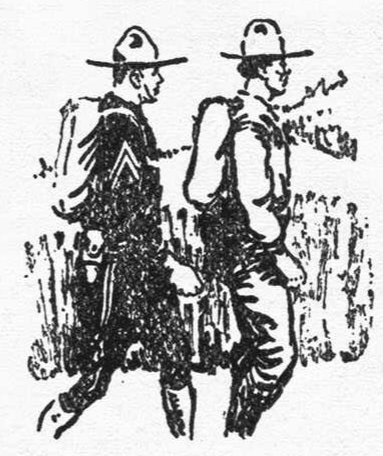
“So did you,” retorted Bud. “You know damn well that Magee is responsible for most all of the liquor that comes into this district, but you can’t nail him with it. You send one man in there to buck that whole bunch. Don’t you know that every smuggler, rustler, bootlegger is on Magee’s side? What can one man do?
“You swell out your chest and imagine that the R. N. W. M. P. is all powerful, don’tcha? They ain’t. A red coat ain’t got a Chinaman’s chance in Kingsburg. I know Magee and his outfit. He told me that I was wastin’ m’ time tryin’ t’ put the deadwood on him, and that, if I’d quit the force, he’d show me how to make more money than the force ever paid anybody.”
Grandon’s eyes fairly snapped with anger, but he knew down deep in his heart that Bud was right. Their efforts against Magee had been dismal failures, but he did hate to be told in such plain language. Without a word he turned and went back into the house.
“I reckon his hide ain’t as thick as I thought it was,” mused Bud. “And I didn’t say ‘sir’ to him once.”
He stepped off the porch and headed straight for Beaudet’s store. Bud was not the kind that waited for trouble to come to him. His mind was a total blank as to what he had done after taking that one drink, but he felt sure that he had nothing to do with the plight of little Marie Beaudet. He knew that it had been a frame-up, but just why they had included the half-breed girl in it he had no idea. Magee was responsible for the doping, and Bud felt sure that Magee had done it to disgrace him with the Mounted and get him out of the way.
Louis Beaudet and Dr. Clarey were standing near the center of the room, talking softly, while Joe Burgoyne sat on a counter beyond them, staring at the floor. Bud stopped near old Louis, who looked up at him.
“You?” said Louie hoarsely. “You come here—you?”
He made a move, as though to reach for Bud, but the doctor grasped him by the arm.
“Softly, me old friend,” he begged.
Came the sudden creak of the rough counter and Joe Burgoyne, the half-breed, flung himself straight at Bud, a knife in his hand. Burgoyne was only about ten feet away, and his spring was like that of a panther, but Bud was not caught napping.
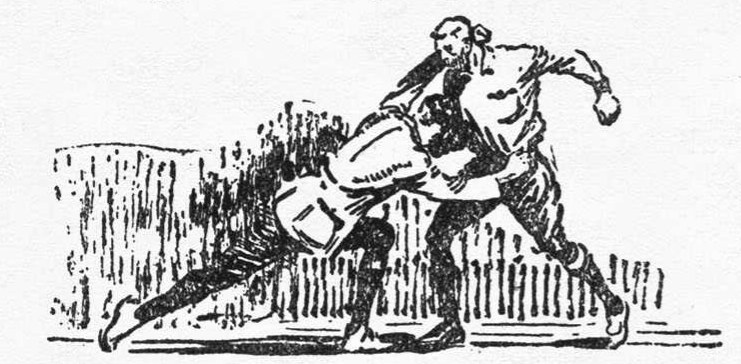
Swiftly he side-stepped just in time to avoid Joe’s rush, and as Joe flashed past him, Bud hooked him across the ankles with his foot, sending the half-breed spinning against the counter across the room.
The fight was all taken out of Joe. His long-bladed knife had flipped out of his hand and skidded under the counter—and Joe was not a bare-handed fighter. He swore softly and felt of his face, which had come into rasping contact with the rough counter.
“If I didn’t feel sorry for yuh, I’d tie yuh in a knot and leave yuh to starve,” declared Bud.
“Sorry?” Old Louie started forward. “You sorry?”
“Yeah,” nodded Bud.
“W’at you sorry for, policeman?”
“I ain’t no policeman now,” said Bud. “I’m fired.”
It took Louie several moments to digest this bit of information.
“So? Yo’ not be de policeman now, eh? Not’ing to keep me from kill you now, eh?” he asked finally.
“Nobody but me. Mebbe I’ll object.”
Bud was in just the right mood to battle everyone in Eagle’s Nest. Joe got up slowly, holding to the counter, while Dr. Clarey still clung to Louie’s arm, talking soothingly.
Someone was coming into the store, and Bud turned to see Norah Clarey. She stopped and looked at Bud, and her dark eyes were filled with pain. She turned and looked at Joe. He tried to smile, but it was more of a smirk. Then she ignored Bud and spoke directly to Louie and her father.
“I have heard of the swift justice of the North, but it seems to have been only idle talk.”
“W’at you mean?” asked Louie.
“You would let this man stay here, after what he has done?”
“He shall not stay,” declared Joe firmly.
“You better run along and find your knife, Breed,” said Bud.
“Breed!” exploded Joe. “You’ll pay for——”
Bud whirled and started toward Joe, who got swiftly out of the way by vaulting the counter.
“I say he shall not stay!” roared old Louie.
“Aw, don’t roar about it!” snapped Bud. “Ain’t a feller got any right to a defense? The Mounted kicked me out without any argument. But I don’t mind. The only time a king means anythin’ to me is in a poker game.
“I expect to leave this place. There ain’t nothin’ for me here—now,” Bud’s voice was pitched lower. “But I’ll be damned if anybody is goin’ to run me out. Nobody asks me if I done this.”
Norah started to speak, but the doctor motioned her to silence. Clarey was a sour-faced old Irish doctor, very strong in his likes and dislikes, but with a heart of gold that he tried to conceal from the world.
“Conley, my lad,” he said, trying to force his voice to be gruff, “perhaps we’ve been a bit too quick, but the evidence is against ye; so heavily against ye that we’ve given no thought to your defense. Have ye any?”
Bud shook his head and grinned at the doctor.
“Nope. I don’t know a danged thing about it. What is there against me, except that I was found with the little girl?”
Louie Beaudet started forward, but the doctor blocked him again.
“Marie see you!” exploded Louie angrily.
“She seen me?” Bud scratched his head wonderingly.
“She don’t know what happened,” explained the doctor. “She says she was coming from my cabin. It was a bit after dark. A man grasped her and something struck her on the head. She has a faint memory of someone giving her a drink of strong liquor, and in an interval of half-consciousness she saw the scarlet jacket of the Mounted.”
“And h’every man of de force be here at de pos’, except you!” exclaimed Louie, shaking with anger. “You are de man!”
“And we were found together this morning, eh?”
“Pierre Ravalli was bad cut in a fight,” said Joe, “and I’m come here for de doctor. When we go back we find you beside de road.”
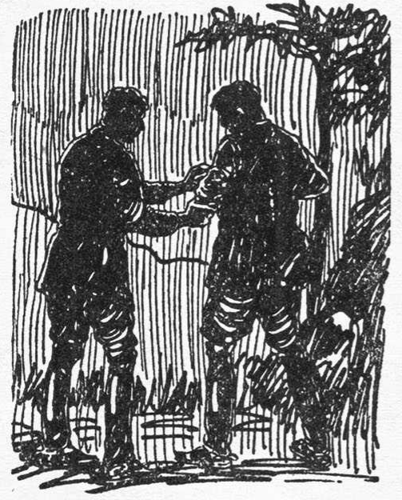
Dr. Clarey nodded sadly. “That is true.”
“Did Ravalli die?” asked Bud.
“He’s not hurt so bad,” said Joe quickly. “I leave de doctor with you, while I go after wagon to bring you back, and I find that Pierre is much better.”
“Was Marie hurt much?” asked Bud.
“Not badly,” replied the doctor. “The blow on her head caused a bad swelling, but she is very ill today from the shock.”
For several moments no one spoke, and then the doctor said softly, “And she was to marry Joe Burgoyne next week.”
Bud turned and looked at Joe, who had come back between the counters and was leaning an elbow on a pile of colored blankets.
“And now he won’t marry her, eh?” queried Bud.
Joe’s eyes flashed to Louie Beaudet, and then he looked away. It was evident that Joe was not going to keep his part of the marriage compact. Old Louie bowed his head and turned toward the rear of the room. The disgrace of it was too much for the old man to face them now.
Joe turned away, too, as though to leave the store, but Bud caught him by the shoulder and whirled him around.
“You won’t marry her, eh?” questioned Bud. “Your honor is so damn clean that she ain’t good enough for you now. Listen to me, you breed coyote.” Bud grasped Joe by both shoulders and shoved him back against the counter. “It was no fault of hers that this thing happened. I don’t know her very well, and you know as well as I do that I never harmed her. But by God, if you don’t marry her, I will!”
Joe clawed backward for support, as Bud shook him violently.
“You heard what I said, didn’t yuh?” asked Bud.
Joe shook himself together and tried to edge away, but Bud blocked him.
“Well,” Joe shrugged his shoulders, “you might ask her; mebbe she be glad to take you—now.”
The sneering words were hardly out of Joe’s mouth before Bud smashed him full in the face. It was a punch with every ounce of Bud’s muscled body behind it, and Joe went down backward, slithering his shoulders against the counter as he fell.
For a moment it seemed that Bud was going to follow up the blow, but the doctor sprang in front of him. The blow had landed a trifle too high for a complete knockout, but Joe’s face was a sight to behold as he got to his feet. For a moment he steadied himself and then staggered straight out of the door.
“I’m sorry you did that, Conley,” said the doctor.
“Y’betcha!” grunted Bud. “I should have used an ax.”
“It does not help matters,” sighed the doctor sadly. “It will not help Marie Beaudet, and will only make you an enemy of Joe Burgoyne.”
Norah had moved in beside old Louie and now they turned and went out through the door that led to the Beaudet living quarters. Bud looked after Norah, but she did not turn her head.
“You will leave here soon?” questioned the doctor.
“Yeah,” nodded Bud. “I reckon I’ll throw in with the bunch at Kingsburg. I’m just ornery enough to make good up there with that layout. I’m kinda curious t’ know more about the kind of hootch Magee sells. She sure makes a feller throw a peculiar fit.”
Bud turned and walked out of the door. The sun had just gone down and it would soon be dark. A big bunch of thunderclouds were piling up in the east, which presaged a storm within the hour.
Bud sauntered down to the barracks and went to his room. His old bed-roll was there, and wrapped inside it was the outfit he had worn into the country. In a few moments he had divested himself of his soiled uniform and dressed in his old cowboy garb.
His battered old sombrero felt more comfortable than the stiff-brim service hat, and he fairly luxuriated in the feel of his old blue shirt and colorless mackinaw coat. He wrote a note to Henderson and pinned it on the sleeve of his discarded uniform coat. Then he buckled on his own belt and gun, took his slicker and bed-roll under his arm and started for the stables. He was all cowboy once more.
Bud owned his own horse and no one contested his right to saddle up and ride away. It was already dark and behind him came the faint muttering of thunder; so he put on his slicker, drew his sombrero tighter on his head and mentally dared the storm to do its worst. About a mile out of town he left the road and took an old pack-trail, which led in a roundabout way to Kingsburg.
CHAPTER II. IN DEFIANCE OF THE LAW
It was about midnight when Henderson walked up to the post, leading his horse, on which was roped two bodies—McKay and Cree George, the Indian packer. Inspector Grandon, white of face and only half awake, said nothing, as he helped Henderson carry the two bodies into headquarters.
“They were in the middle of the street, sir,” reported Henderson wearily. “I suppose everyone was afraid to touch them. McKay’s hat and coat were missing. No one in the town will talk to me about it, but no one interfered with me. McKay’s gun was lying beside him, but his handcuffs are missing.”
“Do you think he was shot while starting back with a prisoner, Henderson?”
“Looks like it, sir. They would have no object in taking the handcuffs. The bodies were lying close together.”
Old MacPherson came in, spluttering, half-asleep, and examined the two bodies carefully.
MacPherson had grown old in the service—old enough to have been retired—but he had induced Inspector Grandon to take him into the Eagle’s Nest post, where he had become a general utility man.
“The poor de’ils never had a chance,” he muttered. “McKay, ye fine lad, they got ye cold, so they did.” He squinted up at Grandon, a suspicious amount of moisture around his old eyes. “Who did it, do ye know?”
“Kingsburg holds the answer, MacPherson.”
“Aye, and she’ll hold it tight,” nodded MacPherson. “The de’il’s own brood they are. Weel, there’s na use of wailin’ o’er cold clay, I suppose.” He got wearily to his feet and shook his head sadly, as he left the room.
“Do you know if Conley is still around here, sir?” asked Henderson.
“I don’t know,” replied Grandon. “Conley and Burgoyne had a fight in Beaudet’s place last evening, and I think Conley handled him roughly. You don’t think that Conley had anything to do with this, do you?”
“Not at all, sir,” quickly. “Conley and McKay were good friends, and beside that, Conley couldn’t have done this. I was just wondering what Conley was talking about when he was brought in. He kept muttering about missing men, sir.”
“Drunken hallucinations,” Grandon sighed deeply. “He spoke to me about it, too. He said it happened a week ago, I think. Said he saw twenty men go into Magee’s place, but he only found two in there.”
“But Bud was not drunk a week ago, sir,” protested Henderson.
“Conley was intimate with Magee,” declared Grandon, “I heard it from his own lips. The force is well rid of him. Better go and clean up, Henderson.”
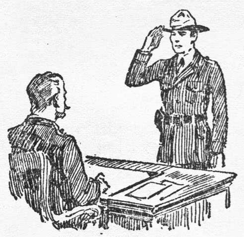
“Yes, sir.” Henderson saluted and left the room.
Grandon was unable to go back to his bed and leave the two bodies alone; so he wrapped himself in a robe and sat down to smoke and think of a plan. Henderson came back and sat down with him.
The talk naturally turned to Kingsburg and Magee.
“Magee has made his boasts that the Mounted have never taken a man out of Kingsburg,” said Henderson. “I think that McKay had made an arrest when he was shot.”
Grandon nodded thoughtfully. “And I suppose that will happen to any officer who does likewise, Henderson.”
“Until Magee and his gang are either run out of the country, or are buried, sir.”
“But we cannot do anything without direct evidence, Henderson.”
“That is our loss and their protection, sir. I think Conley was partly right. He said there was only one way to wipe out that gang, and that was to go up there, accuse them of being a lot of crooks and then shoot it out with them.”
Grandon smiled and shook his head. “Impossible, Henderson.”
“Yes, sir, and Magee knows it. He must have a complete spy system, because he knows our every move in advance. I feel sure that this post is carefully watched all the time. McKay felt the same about it, sir; and Conley, too.”
“I should not be surprised to know that Conley has joined Magee.”
Henderson grinned. “If he ever does—look out, Magee! I know how you feel about Conley’s actions, sir; but I believe his story. Magee was afraid of Conley, I think. Conley was the only one of us that might forget his sworn duty. He was a cowpuncher, not an officer. And as far as Marie Beaudet was concerned—” Henderson hesitated and shook his head, “Conley would never harm a woman, sir. Why, he is head-over-heels in love with Norah Clarey.”
Grandon pursued his lips and frowned slightly. “I’m afraid that Conley can never prove his innocence, Henderson. Anyway, it is a breach of the rules for an officer to take a drink of liquor.”
The talk drifted to other things, as they waited for daylight, half-dozing in their chairs. The rain pattered steadily on the shake-covered roof and dripped hollowly off the eaves. It was about five o’clock when footsteps grated across the porch, and into the room came Louie Beaudet. His face was white above his great beard, and he half-staggered in his stride. In one hand he carried a heavy Colt revolver.
It flashed through the minds of both men that Louie had lost his reason. He was growling deeply in his throat, and waving the gun wildly.
“Whose gun—dat?” he roared huskily.
“Hold it still, Beaudet!” snapped Grandon.
“Hol’ still?” bellowed Louie. “Ba garr, I’m can’t hol’ her still! Here—you tak’!”
He shoved the gun into Henderson’s hands and whirled on Grandon.
“I’m be robbed! Somebody she’s br’ak into my safe and tak’ h’all de money las’ night!”
Louie was shaking with nervousness and wrath and almost pulled Grandon’s desk from its moorings.
“What about the gun, Beaudet?” asked Grandon.
“De gonn? Ba gar, I’m find her on de floor by my safe!”
Henderson placed the gun on the desk in front of Grandon, who picked it up and looked it over carefully.
“Do you recognize the gun, Henderson?” he asked.
Henderson nodded slowly. “Yes, sir, I have seen it before; it belongs to Bud Conley.”
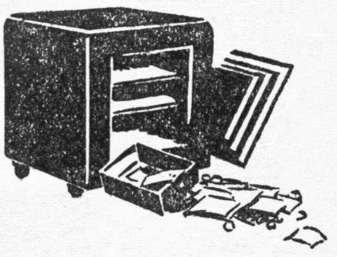
“Bud Conley?” echoed Louie. “She’s rob me of everyt’ing, eh? W’at I do now?”
Louie glanced helplessly around and his eyes came to rest on the two blanket-covered bodies.
“That is McKay and Cree George,” said Grandon softly. “They were killed yesterday or last night in Kingsburg.”
“W’at?” exploded Louie, crossing himself quickly. “Both men dead? Mon Dieu, w’y is all dis be done?”
Grandon ignored Louie’s question and turned back to Henderson.
“Are you sure that is Conley’s gun?”
“Yes, sir. But perhaps someone stole it from him. Wait a moment.”
Henderson hurried out of the room and crossed to the barracks. He was hoping against hope that Bud might be there, but he found that Bud’s personal things were all gone, and on the sleeve of Bud’s service coat he found the note, which read:
Grandon and Louie were crossing toward Beaudet’s store as Henderson came out, and he gave the note to Grandon, who read it and handed it back.
They went into the store, where Louie showed them his rifled safe. It was an old-fashioned affair which locked with a key, and the lock had been forced.
“How much money did they get?” asked Grandon.
“Eight hun’red dollars,” wailed Beaudet. “Right here,” pointing at the floor in front of the safe, “I find de gonn. Firs’ he break my heart and den he break my bank. W’at I do now, eh?”
Grandon shook his head slowly. “I don’t know, Beaudet. Where is Joe Burgoyne?”
“Joe she’s stay las’ night in de old Trentoine cabin. Mon dieu, w’at a face she’s got. I’m t’ink she’s be ashame’ for to be look upon.”
Grandon turned and walked out, with Henderson following him closely.
“It looks like Conley had played the fool again,” he told Henderson, “and he has a good chance to get out of the country. Thieves will have to wait until murderers are caught.”
Investigation proved that Bud’s horse and saddle were gone, but there was no way of telling which way he had gone out of Eagle’s Nest. Grandon shook his head and went back to his office. There was little he could do at present.
Henderson was the only man left, and Grandon had learned that one man could do nothing at Kingsburg. The killing of McKay and Cree George and the leaving of the bodies in the street was a direct challenge to the force.
Magee was a brute of a man, crafty, vindictive, suspicious, and he had surrounded himself with men who were no better than himself until Kingsburg had become known as a town of lawlessness.
It was impossible for the law to fasten a single crime upon Magee, yet they knew that he was responsible for many grave offenses. It was a tough problem that faced Grandon that morning.
Joe Burgoyne sauntered into town and sat down moodily in front of Beaudet’s store. He was no longer Joe Burgoyne the debonair. His classical nose had been dented and a split upper lip gave him a continuous sneer. His eyes hinted at a sleepless night and he spat angrily at a few loafing Indians who gazed curiously at him.
His sorrowful reflections were broken by Henderson, who came up and informed him that the inspector wished to have a few words with him.
“What for?” demanded Joe sullenly.
“He’ll tell you,” said Henderson coldly.
Joe got to his feet and walked slowly toward headquarters. He did not relish a talk with Grandon, but he knew better than to refuse. Henderson followed him in and Grandon motioned him to a chair.
“What you want?” demanded Joe. He was more Indian than white now.
Grandon considered him for several moments.
“Burgoyne, do you know that McKay and Cree George were killed yesterday at Kingsburg?” he finally asked.
Joe nodded quickly. “I hear it talk about today.”
“You do not like the police, do you Burgoyne? No need to answer that question. Here is what I want to talk to you about. A white man and an Indian, both wearing the authority of the law, were shot down in the street. The man or men who fired those shots must pay the penalty of the crime.
“I can bring enough men in here to wipe Kingsburg off the map, but the innocent would suffer with the guilty. If I can find the names of the guilty men, we will go there and take them away. But no man in the employ of the police would be able to gather that information, except by accident. You understand?”
Joe nodded and caressed his sore face.
“You know Kingsburg and Magee?”
Joe shrugged his shoulders helplessly. “I go there like de rest.”
“You know Magee?”
“Sure—like de rest know him.”
“And are you afraid of him—like the rest?”
“Why should I be afraid of Magee?” flashed Joe quickly.
Grandon nodded. “I am glad of that, Burgoyne.”
“You blame Magee for shoot policemen?”
“I feel sure he knows who did it.”
“What you want from me?” Joe seemed suspicious.
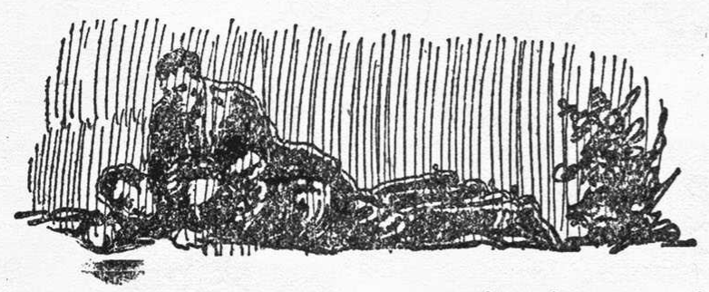
“I want you to go to Kingsburg and find out who killed McKay and Cree George.”
Joe shook his head. “I don’t want to be killed.”
“Nobody will know you are working for me,” urged Grandon.
“Nobody know, eh?” Joe’s beady eyes half-closed as he leaned back in his chair and considered the proposition. “Mebbe take long time to find out, eh? If police come there, nobody find out, and Joe Burgoyne die quick. You give me t’ree days—mebbe I find out.”
“Take your own time,” said Grandon, visibly relieved, “and no one from the post shall interfere with you.”
Joe got to his feet and turned toward the door.
“We could use any information regarding the whereabouts of Bud Conley,” added Grandon.
Joe spat angrily and nodded his head, as he went out of the door. Grandon smiled across the room at Henderson.
“Burgoyne has a score to settle with Conley, and I think we may look for some early information.”
Henderson nodded and examined the revolver that Louie Beaudet had found beside his rifled safe. He had seen it many times. The butt plates were carved from solid bone, showing a steer’s head in relief on each plate. There was no question of ownership.
“Why do you suppose he forgot his gun?” queried Grandon.
Henderson placed the gun on the table and shook his head, as he said, “Conley might forget his boots or he might forget every rule of the service, sir; but he’d not forget his gun.”
“You think someone stole the gun to throw the guilt on Conley? Ridiculous, Henderson!”
“Yes, sir,” said Henderson meekly, which might have meant an answer or an agreement.
CHAPTER III. THE WOOING OF THE HALF-BREED
Bud Conley’s disgrace had been an awful blow to Norah Clarey, although she concealed it well. She had known Bud ever since she had come from school in Vancouver to join her father. Norah had been raised in Eagle’s Nest, and Bud, with his clear blue eyes, uptilted nose and ready smile had fairly grown into her life. He was different than any man she had ever met. There had been no courtship between them, but both of them seemed to feel that none was needed.
With all of her impulsive soul she tried to hate him for what he had done—tried to, but hardly succeeded. For little Marie she had nothing but sorrow. She was only a slip of a child, to Norah, although there was only a matter of a year or so difference in their ages.
It was inconceivable that Bud Conley would do this thing. But there was the evidence. He had sacrificed his place in the service and disgraced himself with the girl he loved. Norah shook her head and tried to tell herself that Bud was not worth a thought.
She knew that strange things had been done at Kingsburg. Much whisky had been run across the border, and it was an easy sanctuary for outlaws from the States. Dr. Clarey had patched up many a wound at Kingsburg, and shut his lips tight against the questions of the Mounted. He was a moral, law-abiding man, but his practice and patients were sacred to him.
Dr. Clarey had gone to the store and Norah was busy with her housework, when Joe Burgoyne, coming from his talk with the inspector, dismounted at the porch.
Joe had seen the doctor going down the path to Louie Beaudet’s place, and had waited until he was out of sight before going to the Clarey cabin.
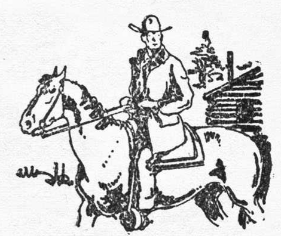
Norah came to the door, carrying her broom and watched Joe tie his horse to a corner of the cabin. Since his encounter with Bud Conley, Joe Burgoyne was far from being the gay half-breed.
His clothes were badly wrinkled, as though he had slept in them, and a scowl twisted his lean face, as he tried to force the restive horse to lead up close enough to enable him to make the tie.
Norah had never liked Joe Burgoyne. There was something snake-like about him. She really hated to see little Marie marry him, and felt a thrill of satisfaction when Joe had refused, although she detested Joe for his decision.
He turned and saw her standing in the door.
“Ah, I am pleased to see you,” he said, and his white teeth flashed in a smile. “I come to see Dr. Clarey.”
Norah stepped further out onto the porch and glanced down toward the store.
“Why, he just went down to Beaudet’s,” she replied. “Didn’t you see him?”
Unconsciously she turned and went inside and Joe followed her. Joe’s every movement was like that of a panther. Possibly this was an inheritance from his Nez Perce mother.
“No, I don’t see him down there.”
Joe shook his head and sat down in one of the rough rockers, while Norah went on about her house-cleaning. Joe watched her closely, as he said, “You got hair like de shadows in La Clede cliffs.”
Norah stopped sweeping and looked at him.
“What do you mean?” she asked.
“You never seen de shadow of La Clede cliffs? De soft black and purple—more like clouds. You got hair like it.”
Norah snorted visibly and continued sweeping. She did not seem to care for Joe’s compliments.
“You much sad, eh?” queried Joe softly. “I’m sorry.”
Norah looked at him, but continued her work.
“Your eyes be sad.” Joe was very sympathetic now. “You make mistake in one man and now you be very sad, eh?”
Norah flushed slightly, but did not reply.
“You must not be sad,” continued Joe. “Why you don’t smile and drive de clouds from your eyes? You are de prettiest girl in de worl’, and you must not be sad.”
It suddenly occurred to Norah that Joe was trying to make love to her, and she was not at all pleased.
“You smile at Joe Burgoyne and he feel proud. Maybe I bring you de nice present, eh? I’m like to do dat.”
“You bring me a present?” Norah turned quickly on him. “What about Marie Beaudet?”
Joe laughed softly and shook his head. “Marie? Dat is all past. I want to marry good woman—me.”
Norah stared at him for a moment and then pointed toward the door. “Dr. Clarey is down at the store, and I think you had better go down there to see him.”
“I wait here for him,” declared Joe, grinning. “I’m more interest in other things jus’ now.” He had failed to note the anger in Norah’s face and voice.
“You’ll not stay here!” Nora’s hands tightened around the broom-handle and her face went a shade whiter.
Joe glanced quickly at her and got to his feet. “You not mad at me?” Joe spread his hands in a gesture of despair. “Mon dieu, I am sorry!”
“You had better go now,” said Norah coldly.
Joe turned toward the door, but did not go out.
“You don’t like me, eh? I want to be nice to you, but you send me away. Is it because I am quarter-breed? Mebbe you like best de white man, who is de thief? No, I am sorry I say dat, mam’selle—very sorry.”
Norah had turned away and Joe started to follow her.
“Please don’t be mad with me,” he begged. “I love you ever since you come here. You no love me, eh? I know.”
Joe’s voice was so wistful that Norah’s anger faded and she turned to him.
“Why don’t you go back to Marie?” she asked. “Louie Beaudet is broken-hearted. Marie is a good woman.”
Joe laughed bitterly and shook his head. “No, I never go back to her. Good woman, eh? How could she be good woman?”
This time Norah could not hold her temper nor her tongue and Joe retreated out of the door.
“You soulless little rat!” she called him. “You are not even half-a-man! In spite of anything she has ever done, Marie Beaudet is many times too good for you! Now get out of here and stay out!”
Norah slammed the door shut, knocking Joe into Dr. Clarey, who was coming up behind him. The doctor grasped Joe to keep him from falling, but Joe, with a snarling curse, tore away from him, went out to his horse and rode away.
Her father opened the door and almost became a victim of Norah’s broom. He stepped back quickly, but she dropped the broom and laughed hysterically.
“I thought he was coming back,” she explained. “The little snake tried to make love to me.”
“Now, would ye believe that!” exploded the doctor. “That—well, now, it’s all right. He has a grand taste, so he has, Norah; and I give him that much credit. But I have some bad news for ye. McKay and his Indian were killed in Kingsburg, and last night someone broke into Louie’s safe and stole all his money.”
Norah stared at him and her hands clutched at her apron. “Jimmy McKay and his Indian killed?”
“Aye. Henderson brought them in last night.”
“And Louie was robbed, you say?”
“He was. They took everything in his safe.”
Norah stared out of the open door. She had known McKay for a long time.
“And it’s worse and more of it,” volunteered the doctor. “Bud Conley’s gun was on the floor beside the safe.”
Norah turned and looked dumbly at him. “Bud’s gun?”
Her voice was barely above a whisper. “Bud’s gun?”
“Aye. Henderson identified it, Norah. Ah, I’m sorry.”
She bit her lips and shook her head. “You don’t need to be sorry for me, daddy. Be sorry for poor Bud Conley.”
“Aye, that’s true. He left a note for Henderson, saying that he was leaving. Things are in a bad shape around here, my dear. The inspector’s face looks like it was petrified, Angus MacPherson is swearing incessantly and old Louie is crying into his beard. Aye, there’s a deal of sorrow.
“And now Joe Burgoyne is blaspheming because you won’t love him,” added the doctor after a moment. “Sure, this sorrow is contagious. There’s no doubt of the truth that single misfortunes never come alone.”
Norah shut her lips tightly and turned back to her sweeping. The doctor studied her for a moment, shook his head and crossed the room to his desk.
CHAPTER IV. A CAPTIVE COWBOY
Bud Conley’s awakening was painful. His mind was hazy and his eyes seemed badly out of focus, as he stared up at the ceiling of the log cabin. He tried to moisten his lips with his tongue, but it was like leather against leather.
“Gee cripes, I must ’a’ been awful drunk,” he said aloud. “I feel like I’d been corroded.” He reflected for a moment, and then added, “Maybe it’s my iron constitution that has began to rust. Whew, what a flavor I have in my system!”
After considerable effort he managed to hitch himself over to the wall, where he braced himself and looked around. He was in a small cabin, windowless and with one door. The cabin had evidently been built for something other than a place to live.
Bud swallowed painfully and felt of his head. Then he began to remember a few things. He had ridden up to the front of Magee’s place at Kingsburg in a driving rain and had tied his horse. As he ducked under the hitchrack, he remembered seeing someone near him, and then a heavy weight had descended upon his head. From that time he had no recollection.
“Whatcha know about that?” he grunted aloud, feeling of his aching head. “I must ’a’ been crowned queen of Kingsburg. They’ve sure handed me two wonderful receptions in that town.”
His clothes were still wet and muddy and the upper part of his body was bloodstained from the cut on his head, which had stopped bleeding. His cartridge belt and gun were gone.
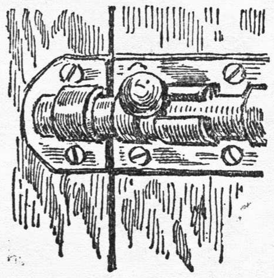
He managed to get to his feet and stagger over to the door. It was fastened from the outside and was as solid as the four walls.
“Well, they sure respect a Montana cowpuncher enough t’ lock me in a place where I’ll stay put,” he observed. He circled the walls carefully, but nothing less than an axe or dynamite would ever make an impression on those heavy logs.
“She’s so danged tight yuh couldn’t even pour water out of it,” he declared to himself, “so I reckon I’ll stay right in here, like a nice little boy.”
He sat down on the floor and leaned against the wall, just as the door swung open and closed quickly behind two Indians. One of them carried a blackened pot and both had rifles, with which they kept Bud covered. They were both evil-faced bucks, seemingly half-drunk.
Bud started to his feet, but one of them shoved a rifle against him, grunted a warning and Bud sat down.
“How’s all yore folks?” asked Bud pleasantly.
The one with the pot motioned toward the receptacle and said thickly, “Eat.”
“I don’t have to, if I don’t want to, do I?” queried Bud.
“No kumtuks,” said the other, signifying in the Chinook jargon that he did not understand, and they backed toward the door.
Bud was unable to tell what tribe they belonged to, but felt that, from their use of the Chinook jargon, that they were renegades from tribes across the border, although the border tribes of British Columbia spoke the jargon.
“Wait a moment. Let us talk, friends,” said Bud in the same strange tongue, which he could speak.
He thought he might get them into conversation and find out why he was imprisoned, but one of them shook his head and said coldly, “No talk. Not friends.”
As they opened the door, Bud spat at them, “Mahkh mokst, hum opoots!”
One Indian started to lift his gun, but the other spoke gutturally and shoved him outside. They barred the door quickly behind them.
“Well,” observed Bud sadly, “tellin’ that pair of skunks to get out quick didn’t get me anythin’ that yuh could see with yore naked eye. As far as knowin’ anythin’, I’m right where I left off.”
He examined the kettle of stew, but his stomach rebelled. The kettle was none too clean, and its contents far from appetizing. Bud was still nauseated from the blow on his head, and he wanted a drink of water.
“Skunks they were,” he reflected, “but I should have kept the information away from them long enough to beg a drink of water. Now, why am I a prisoner?”
But there was no lead for him to work on. He had always been friendly to the Indians. Why had Monk Magee given him the doped whisky, and why did Marie Beaudet figure in his troubles, he wondered.
A search of his pockets showed that his captors had overlooked his knife and several matches. The cabin was chinked from the outside with strips of wood, but he was able to work the large blade of the knife between the strips.
It was a slow process, but after a time he was able to gouge out a place large enough to enable him to peer into the adjoining room. It was empty, as far as he could see, and was without a window. He attacked the opposite side of the room, but was unable to work his knife blade between the strips.
In a spot above the doors there appeared to be two logs which had never been chinked. The light space was fairly large and Bud considered the possibilities of getting up there for a look outside. The logs offered little surface for climbing, but after much labor and several ineffectual attempts he managed to hang up there long enough to peer out between the logs.
In front of the cabin was a fairly heavy growth of brush and trees, some of which had been cut away. The rain was beginning to fall again—another dreary drizzle—which presaged a wet night.
Bud dropped back and fell to a sitting position on the floor. He was still a little weak and very thirsty, but grinned with satisfaction, as he began slicing splinters off the exposed chinking of the cabin.
It was slow work, but Bud was not in a hurry, and by the time that the light failed he had collected a goodly supply of the pitch kindling, which he piled against the door.
He sat down and rested a while, waiting until it was very dark. The rain was coming down heavier now and the interior of the cabin was growing colder.
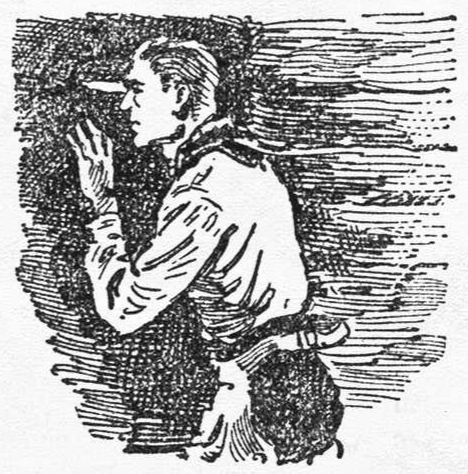
Then came a scraping noise in the next room. Bud managed to find the peep-hole in the wall, which he had made with his knife. There was a candle burning in the room, beside what appeared to be a hole in the floor.
A closer survey showed that the floor of that room was composed of hand-hewn timbers, known as puncheon, and that some of them had been removed, making a hole in the center of the room.
As he peered in he saw a man come out of the hole, carrying a heavy keg, which he rolled against the wall. Then he went back and helped another man remove a keg from the same place. They talked in an undertone for several moments, and then replaced the puncheon.
Each of them took a keg and carried it beyond Bud’s line of vision. Then a door creaked open and he heard them shut it from the outside. They were talking again and their voices were plainer.
One of them said, “They can’t pack all this in tonight, unless they want to take a chance and take it in the wagon.”
The other replied in too low a tone for Bud to hear, but their voices died away in the distance.
“So this is where Monk Magee keeps his hootch cached, eh?” mused Bud. “Sort of a supply station, I reckon. Well, it’s none of my business.”
He went over to the door and touched a lighted match to the pile of splinters, which were heavily impregnated with pitch. Inside of a minute the cabin was lighted with the glow, and the black smoke was seeping out through the chinking.
Somewhere a man yelled a warning, but Bud was unable to tell whether it was a white man or an Indian. The flames roared against the seasoned pine of the door, and the room was filling with smoke.
Then came an Indian’s voice, crying a warning. Bud sprang to the wall and climbed like a monkey, clinging with tooth and nail to the rough logs. Sideways he moved until he was directly over the door, where the stifling smoke boiled out of the unchinked logs.
Came the sound of running feet, a jumble of Indian gutturals and the door was flung open. The smoke swirled out of the door, and enabled Bud to see the two Indians, who had kicked the fire aside and were peering in through the smoke. As they moved further in, holding their guns ready, Bud dropped like a plummet, feet-first onto the broad back of one of them.
The Indian grunted hoarsely, dropped forward from the crushing weight and Bud pitched sideways into the other Indian, knocking him backward and out of the cabin by the sheer weight of his attack.
They went down into the mud, rolling over and over. The Indian had lost his rifle, and most of his breath had been knocked from his body, but he clawed wildly at Bud, fighting like a wild animal.
But Bud was not idle. He was schooled in the rough-and-tumble methods of battle and he mauled the Indian without mercy. The other Indian, still half-stunned, recovered his rifle and came to his companion’s assistance.
It was impossible for him to shoot at Bud, without taking a big chance of hurting his companion; so he danced around them, trying to strike Bud with the butt of his rifle. Behind them the fire blazed merrily, as the pine logs of the cabin picked up the flames, and the scene was well lighted.
Bud’s attention was centered on his immediate opponent, who was giving him plenty of battle, but he was not losing sight of the fact that his head was in imminent danger of being crushed at any moment.
Over and over they rolled, each striving for a damaging hold, but both fighting silently. Then Bud got a grip on the Indian’s throat, and their heads were close together. A glancing blow from the gun-butt partly paralyzed Bud’s shoulder, but he clung to his choking grip on the buck’s throat. The other Indian was striking oftener now, as though taking a long chance, but Bud was watching.
The fight was slackening now. Bud’s strangle-hold had caused the Indian’s body to grow limp and his hands relaxed. Suddenly Bud threw himself away, as though trying to disentangle himself, but as the gun butt swished downward he jerked the Indian almost over him.
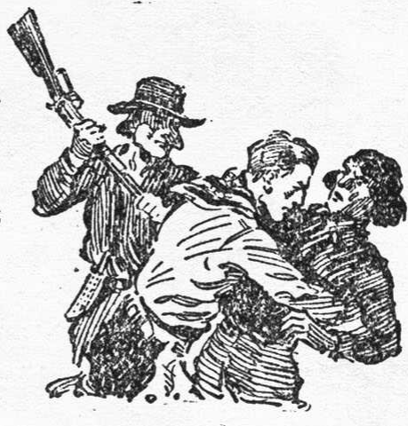
Came the dull thud of hardwood on yielding bone. Quick as a cat, Bud flung his opponent aside, rolled over and sprang to his feet. The other Indian yelled and sprang after him, rifle upraised, thinking that Bud was about to escape, but instead of running away, Bud dug his toes into the soft dirt and came back like a charging moose.
His shoulder crashed into the Indian’s midriff and the rifle went spinning away. The shock threw Bud sideways, and he sprawled across the body of the second Indian, where he lay for several moments, gasping from the collision. But the other Indian did not get up; he was completely knocked out.
Bud got to his feet and looked around. The wound on his head had opened again and his face was cut and bruised from the fight. His shoulder ached from the blow and he felt dizzy and weak, but lost no time in securing one of the rifles. He removed a belt of cartridges from one of the Indians and fastened it around his waist.
The cabin was blazing merrily now and nothing could save it. Suddenly there came a shout from behind the building. Beyond the light of the burning cabin every thing was a black pall, but Bud raced headlong into it, trusting to luck to strike a trail.
As he struck the brush tangle, almost beyond the light from the fire, he looked back and saw several forms running around the cabin. They halted at the Indians, talking loudly, but Bud waited no longer. Gripping his rifle tightly, he started running into the darkness of the trees.
Then he stopped suddenly. From just beyond him came the unmistakable creak and rattle of a wagon, and the sound of a man’s voice, talking excitedly.
“Whoa!” The wagon stopped.
“The whole damn thing’s on fire!”
“Well, whatcha goin’ to do—stop here?”
“Danged right. We don’t know who’s there.”
Came the sound of them getting down from the wagon.
“Goin’ to tie the team?”
“Naw, they’ll stand. Come on.”
The two men passed very close to Bud and went on toward the fire. Bud chuckled to himself and felt his way over to the team. Cautiously he lit a match and looked around. It was an old lumber-wagon, with a high box, and the team was a shaggy pair of gray bronchos.
Bud noted that there was room to turn the outfit around, so he lost no time in climbing to the seat and gathering up the lines. He had no idea of where he was, and in the darkness and rain he could not even see his team, but he trusted to them to keep the road.
Cautiously he turned around, bumping over rocks, down timber and low brush, but managed to get headed the opposite direction and spoke sharply to the team. It was like heading into a black void, but the grays responded with a will.
CHAPTER V. A GUIDING LIGHT
Bud soon found that there was little road. It was more like a cross-country, hit-or-miss proposition. The rain drifted into his face and he clung to the seat with both hands, but the team kept going steadily in spite of the fact that the wagon was never on an even keel.
There was nothing to show Bud where he was; nothing but the solid wall of blackness, out of which came the gusty spurts of rain, which drenched him and sent a chill racing up and down his spine.
“Gonna get down and walk pretty soon,” he told himself, slapping his arms dismally and almost falling off the wagon. “Better stayed in that cabin where it was dry.”
He wondered in a dull sort of a way whether the Indians were dead and whether he was being pursued by the men who owned the wagon and team. For hours, it seemed to him, he drifted ahead, jolting over rocks, surging in and out of hollows.
Then he saw a light. It was a tiny flicker, which glowed for a moment and went out. He stopped the team. A light might mean a habitation, and Bud was badly in need of a habitation. But he could not see the light now. Prompted by a sudden idea, he got off the wagon and walked back, thinking that perhaps he had driven beyond the angle of the light.
Finally he picked it up again, but when he moved back toward the wagon it disappeared. He seemed to be in a more open country now, although it was difficult to tell just what the place did look like.
He stumbled back to the wagon and deliberated on his next move. He managed to light a match, which showed him that he was still on the road; so he led the team at right-angles, clearing the road and tied them to a jackpine.
Taking his rifle he went back to where he could see the tiny light, and struck boldly across country toward it.
And he found the going very bad indeed. He could not see the ground, and, after he had picked himself up for the fifth time, he declared aloud that it was surely the rocky road to Dublin. His shoulder and his many bruises ached and he was chilled from the rain.
But he kept the light in sight, in spite of the underbrush, logs and rocks, which tripped and bruised him. He lost his rifle and had a difficult time finding it.
At times the rain descended in such torrents that the light was obliterated, but he stood still until it slackened. He was used to the rain now. Every muscle and joint in his body ached, but he gritted his teeth and laughed loudly at the misery within him.
Finally he reached the light, or close to it, and stopped. To all appearances it was a lantern, which was seemingly suspended in the air. He was standing in a little thicket of jackpines within possibly six feet of the light.
As his eyes became more accustomed to it, he seemed to catch a faint glow of the light against rocks.
“Looks like it was against a hill,” he reflected, as the downpour slackened for a moment. “That lantern is hangin’ in a break in the hill.”
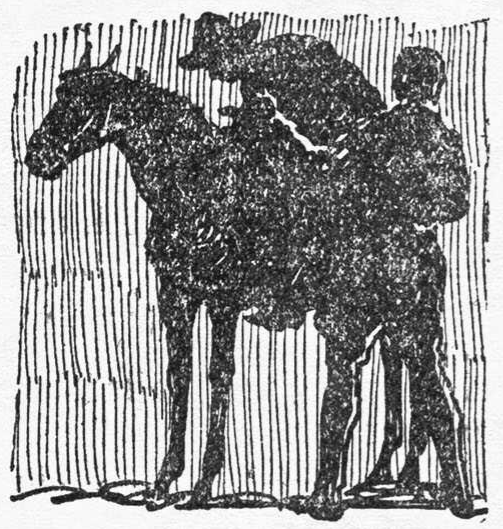
He was about to push forward to investigate, when he heard a faint noise like something walking in the mud. He drew back. The sound was louder now. Then, out of the storm, came some bulky-looking objects, which, when they came into the glow of the lantern, proved to be two men and a horse.
They stopped, almost in reach of Bud, blocking him from the lantern, and began unpacking the horse. Neither of them spoke until their unpacking was done. The horse moved slightly ahead, and Bud saw one of them, the one on the further side, pick up a keg, balance it on his shoulder and disappear under the lantern.
“Put out the light when you come in,” ordered the man with the keg, and the one at the horse grunted a reply. As he lifted the keg, Bud shortened his grip on his rifle and swung it forward in a short arc.
The man collapsed without a sound and the heavy keg struck the ground with a thud. Bud grasped the lantern and examined him quickly. He was wearing a checked mackinaw coat and a moth-eaten fur cap. Swiftly Bud stripped these off and put them on himself. Then he hoisted the keg on his own shoulder, stumbled over to the entrance to what proved to be a tunnel, jerked the light from the lantern and went stumbling in through the darkness.
He had no idea of what was ahead of him, and swore at himself for being a fool, but kept on going. He had left his rifle outside and was unarmed. As near as he could tell he had gone about a hundred feet, when he turned a corner and saw the light shining through an open door.
A babble of voices came to him, the reek of liquor and stale tobacco smoke; but he ducked his head and went straight through the doorway and into a room, which was partly filled with men and entirely filled with conversation.
Someone cheered loudly and the keg was taken from him by willing hands. He was jostled aside and came to a stop with his back against a wall. Then he lifted his head and looked around cautiously.
He was in a room about twenty feet wide by forty feet long; a low-ceiled place, with heavy, rough beams. On one side was a rough, bar-like counter, on which the two kegs had been placed, and just beyond one end of the bar was a rough stairway, leading up to what appeared to be a trapdoor.
At the further end of the room was a small platform, on which sat a fiddler and a man with an accordeon. Nearly in the center of the room a crowd of men were packed around a card-table, over which hung a big, oil lamp, with huge circular shade. Over the bar was another, smaller lamp.
The room was foggy with smoke and there seemed to be no ventilation. The kegs of liquor seemed to be the center of interest just now; so Bud moved over toward the crowd at the card-table, taking pains to conceal his face.
Bud recognized several of the men around the table. There was Culp, a horse-thief from the Sweetgrass range; “Goat” Marlin, who got his nickname from his method of fighting; “Bull” Cook, who had served two years in the penitentiary for cattle rustling.
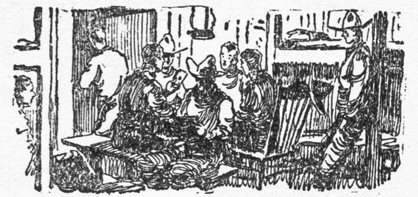
“A sweet aggregation,” reflected Bud, and hoped that none of these men might recognize him. Cook was very drunk and seemed anxious to get into the game, but the seats were all filled.
He leaned heavily on another man and made drunken remarks about the players. Bud moved in closer to him. Cook’s belt and holster had shifted around until the gun was hanging almost directly behind him, and by leaning in close and grasping the bottom of the holster, Bud was able to remove the gun without anyone seeing him.
Cook straightened up, still arguing, but did not notice the absence of weight on his belt. He yipped joyfully and staggered toward the bar. Bud concealed the gun in his mackinaw pocket and grinned softly.
The music started again and one of the cowboys essayed a drunken jig. Suddenly a bell tinkled and the music stopped. The cowboy continued his dance until someone grabbed him and forced him to stop. The room was as quiet as a tomb.
After a pause of about fifteen seconds the bell tinkled again and the tension was relaxed.
“A signal from upstairs,” observed Bud. “Now, what is upstairs?”
A man beside him was talking.
“Monk she’s scare h’all de time. Ho, ho, ho! H’every time somet’ing move—Monk she’s ring de bell.”
Another man laughed harshly, as he said, “I reckon we don’t need to worry about them red-bellies. There’s only two of ’em left in Eagle’s Nest, and one of them is the inspector.”
One of the men in the game looked up at them.
“The killin’ of that policeman and Indian in the street was a damn fool thing to do,” he declared. “You can buck the Mounties just so long, but they’ll git yuh in the end.”
“W’at you tink?” grunted the Frenchman. “Yo’ t’ink de boss want Monk to go to de jail?”
“He might at least ’a’ moved the bodies. Yuh can’t bluff the Mounties thataway. Killin’ ’em only makes the rest that much worse. I don’t like it.”
“I’m t’ink de boss know what she want.”
Bud averted his head while he thought over what he had heard. McKay and the Indian had arrested Magee and were killed in the street by the boss. Who was the boss, he wondered? If Monk Magee was ringing that warning bell, this must be Magee’s place. Then it suddenly dawned upon Bud that this room was beneath Magee’s hotel at Kingsburg.
This was where those men had gone that day they had disappeared so mysteriously. No wonder he failed to find them.
“And I didn’t have sense enough to keep away from the danged place,” he reflected bitterly. “I’m in a danged good place to lose my scalp.”
The crowd at the bar were laughing loudly, and Bud turned toward them. One of the kegs had been decorated with a red coat. A bottle had been placed atop the keg, and on the bottle dangled a service hat of the Mounted police.
And to this effigy of a Royal Northwest Mounted Policeman they were drinking vile toasts. The coat and hat were stiff with mud, but never before had they meant so much to Bud Conley, the Montana cowpuncher.
For a moment his eyes narrowed and he surged ahead, gripping the pistol in his pocket. He was going to show this howling mob of outlaws what it meant to insult the service. But he stopped. It suddenly dawned upon him that he was not a member of the force any longer. Why should he take up a challenge for the Mounted?
The noise at the bar stopped. Bud turned his head. Coming down the stairs was Joe Burgoyne, the half-breed, grinning widely. Bud moved further back against the wall, his hand still gripping the gun.
The men called loudly to Joe, who answered with a flash of his white teeth and a wave of his hand. A man shoved a cup of the raw liquor into his hands, while the others crowded around him.
“W’at about de police, Joe?” called one of the men at the card table.
The half-breed threw back his head and laughed mockingly.
“De police! Such a lot of fools! Ha, ha, ha! Listen,” Joe sobered quickly, and the place was stilled.
“Today, or rather las’ night, I am appointed to find out who kill one officer and one Injun. Everybody look out, because Joe Burgoyne is police spy.”
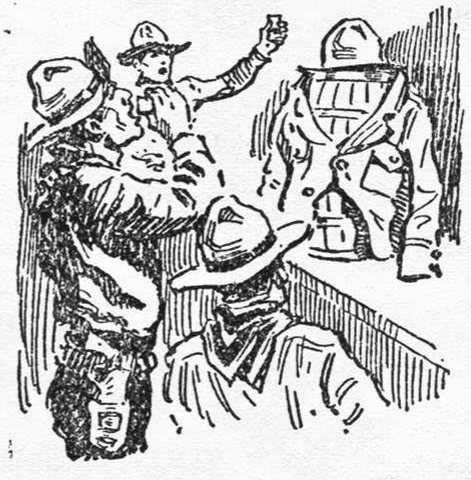
A roar of laughter greeted this statement, in which Joe joined heartily. Then his roving eye caught sight of the effigy on the bar and he simulated sudden exasperation.
“See?” he exploded, pointing at the effigy. “The police lie to poor Joe! They promise to not send any policeman to Kingsburg for three day. Ba gar!” Joe dashed down his cup of liquor. “I’m quit work for the police right now!”
The crowd roared their approval and surged to the bar. Bud knew that Joe was sober and that his keen eyes would search him out quickly. There was no question but what Joe was in league with Magee’s gang, and Bud smiled to himself at the thought of Grandon hiring Joe to spy on his own crowd.
Joe had mounted to the top of the bar and shouted for silence, as he held up a cupful of liquor.
“Listen to Joe Burgoyne!” he called. “Three days no police come to Kingsburg. Three days more and lots of them come. I know the police—me. I have not watched Eagle’s Nest all time for not’ing. I am goin’ to quit before the police come.
“When they come they find not’ing. I’m give this place to Magee, but he runs only hootch. Maybe we meet again some place and fool the police again, eh?”
The crowd roared and lifted their cups. Questions were flung at Joe, as to why he was closing his place of business, but Joe ignored them.
“Drink a toast to Joe Burgoyne,” he invited. “Tonight the liquor is free. I make money for you; I get you lots of whisky. Now drink toast to Joe Burgoyne and his new girl.”
The crowd drank noisily.
“W’at name, that girl?” yelled one of them.
“Name?” Joe laughed. “Bimeby be Burgoyne, Pierre. Just now she’s Irish. Ha, ha, ha!”
Bud gasped. What did he mean? Norah Clarey was the only Irish girl in that country. Or was it only a wild boast of the egotistical half-breed?
“I’m go long ways north,” explained Joe. “Go too far for police to follow. And Joe Burgoyne take his girl along. The police give me two more days, and I be long ways from here.”
“You get married, Joe?” asked one of the cowboys.
“You bet! Without priest. Ha, ha, ha, ha!”
Came the sound of the trap-door being violently thrown back, a sharp exchange of words and two muddy, half-exhausted men fairly tumbled down the stairs. Swiftly they looked around. Joe was coming toward them.
“Conley got away, Joe!” panted one of them. “He set fire to the cabin and got away. He killed one of the Injuns and damn near killed the other!”
“Diable!” swore Joe. “You say that Conley got away and——”
“Yes, yes! Not only that, but I think he stole the team and wagon. Me and Beaupre got there just after he escaped. We left the team about a hundred yards from the burnin’ cabin, and when we came back it was gone.”
“The team and wagon gone?” Joe screamed, shaking the man by the shoulders. “Mon dieu!” He struck the man full in the face and sent him reeling against the wall.
The room was in an uproar. Came a sound of someone hammering on the wall, almost directly behind Bud. One of the men shoved Bud aside and flung the door open.
A man fairly fell into the room; a man who was hatless, coatless, and whose face was streaked with blood. One of the men grabbed him and held him against the bar. It was the man Bud had knocked down at the entrance to the tunnel.
“Hell!” exploded a voice wonderingly. It was the other man who had carried a keg.
“What does this mean?” he yelled. “Campeau comes with me to carry the whisky, and now—what does it mean?”
He was peering into Campeau’s face.
“Somebody hit me,” whined Campeau. “I wake up outside. I never bring de keg.”
“You no bring in the keg?”
“No, I tell you. Somebody hit me——”
“Where is that other man?” roared one of the crowd, “who bring in the other keg?”
Bud knew that the crisis was at hand and prayed that he might shoot straight. Cautiously he moved over beside the card-table and almost directly under the light.
He had drawn his gun, but kept it concealed. Now he turned and looked deliberately at Joe, who was scanning the crowd. Joe’s eyes blinked wonderingly, as he saw Bud’s face, and a gasp of surprise burst from his lips.
But before he could cry a warning his voice was drowned in the deafening crash of the heavy revolver, which Bud had almost thrust against the big lamp.
Bud staggered back, swung up the gun and fired deliberately at the other lamp, with a prayer on his lips that it might be a dead-center shot. At the crash of the cartridge the room was plunged in darkness.
Bud had taken the only chance left—to escape in the dark. In a moment the room was a maelstrom of cursing, fighting men, who fought blindly, losing all sense of direction in their mad rush to lay hands on Bud Conley or to find an exit out of the place.
Tables were overturned, chairs smashed; but Bud was not in that whirl of frightened humanity. As he fired at the lamp he sprang sideways to avoid the rush of humanity and dove straight for the bar. Men crashed into him as he clawed his way to the top, but he held his place and smashed away merrily with his gun whenever anyone tried to share the bar-top with him.
Some of the crowd had fought their way to the stairway and were going out through the trap-door, while others were crowding into the tunnel exit.
“Don’t let him get away!” screamed Joe’s voice, “He’s police spy!”
Bud grinned. Joe knew that Bud was no longer with the service, but he wanted to frighten the crowd into killing Bud, if possible.
CHAPTER VI. A FIGHT IN THE FLAMES
Bud knew there was no use of trying to get away just now. He could see that the upstairs was lighted, and he knew that those already outside the tunnel would see that he did not escape in that direction.
He could hear men shouting upstairs, as they questioned each other. A cold draught was blowing in the tunnel exit, but Bud did not move. Something seemed to tell him to keep still and wait. There seemed to be no one except himself left in the tunnel.
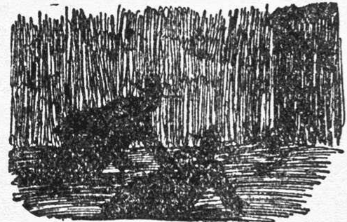
Then, out near the center of the room, a match flared up. Whoever lit the match was lying on the floor. As it grew brighter, Bud could see the saturnine features of Joe Burgoyne. He raised himself up and looked around. The room was a wreck. Just beyond him lay a man, flat on his face, and another was propped against the wall, his head flopped forward.
As Joe turned to look at this man the flame of the match scorched his fingers and he flung it aside.
A sheet of flame seemed to fairly lift from the floor around Joe and he sprang to his feet with a yelp of alarm.
He had dropped the match into the pool of oil from the smashed lamp. Joe backed away from it; backed almost into the bar before he turned and saw Bud. But Bud had risen to his haunches and launched himself straight into the surprised half-breed.
Joe was as lithe as a tiger, and, although Bud’s attack carried him almost into the flames, he twisted loose and bounded toward the stairway. A cloud of kerosene-laden smoke billowed up through the trap. Someone yelled a warning and before Joe could reach the top of the stairs the trap crashed down.
Bud had lost his gun and now he darted back to the bar, searching for it. Joe must have divined Bud’s misfortune, for, with a yelp of joy, he darted back from the stairs, knife in hand. It seemed as if the whole end of the room was in flames now and the black smoke was stifling.
Bud braced himself for the shock, but the half-breed did not come to close quarters. He stopped just out of reach, half crouched, the knife held point outward, as though he was using a rapier. The light glistened on the polished blade, but Bud did not retreat.
Joe’s face was scarred and bleeding from the fight in the dark, which had but increased the injuries inflicted by Bud in Beaudet’s store. Joe balanced on the balls of his feet and worked in closer and closer.
Bud was standing almost over his revolver, but did not dare to stoop for it. Behind Joe the flames roared upward, licking at the beamed ceiling, and the heat was growing intense.
“You finish queek now!” said Joe.
Bud began working slowly toward the bar, dragging the gun with his foot. Joe advanced inches at a time. He did not understand what Bud was trying to do. Then his eyes flashed to the bar—and he knew.
The keg, with its scarlet coat, had fallen to the floor, but the wide hat was still there, partly concealing the bottle, on which it had rested.
Quick as a flash Joe darted forward, but Bud, instead of reaching for the bottle, as Joe expected him to, dropped flat on the floor under Joe’s feet, rolling forward as he fell.
The move was so unexpected that Joe took a header into the bar, while Bud rolled away and sprang to his feet clutching the revolver in one hand.
The fall did not hurt Joe. He had lost his knife, but not his presence of mind. He scrambled to his feet and darted straight for the tunnel exit, but Bud blocked him with a swing of the heavy revolver and Joe went down in a heap.
The room was an inferno now. Bud grasped the limp half-breed, swung him up in his arms and staggered into the tunnel. There was less smoke in there, owing to a breeze outside, which drove the smoke up through the cracks on the room above.
Bud was traveling blindly, holding Joe in front of him and hoping against hope that there would be no one guarding the tunnel entrance. But his hopes were not realized.
He caught a glimpse of the lantern and could see that it was held in the hands of a man. There were other men out there, too. Bud halted.
“Nobody left in there,” argued a voice, which he knew belonged to Bull Cook. “Whatsa use of stayin’ here?”
“I’m be not so sure,” replied another. “Conley not get out ahead of us, and, ba gosh, he never get up de stairs. W’ere is Joe Burgoyne?”
“Must ’a’ gone up the other way. What’s all the yellin’ about?”
Bud knew that the yelling must be from those at the burning hotel.
“We stay here,” declared the man. “Dis be one damn bad night for Kingsburg, eh?”
“Yeah, I reckon we gotta drift, Frenchy. I hope that Joe nails that dirty spy.”
Bud knew that there was no time to lose, if he was going to get away. There were two men guarding the tunnel, but two men would be easier to handle than that whole mob, which might appear at any time.
He gripped Joe tightly in his arms, half burying his face in Joe’s back, and stumbled straight into the lantern light.
“De place be on fire,” he stated, imitating the language and tone of a French-Canadian.
“I’m save de boss, ba gar!”
“Mon dieu!” exclaimed one of them. “W’at happen to Joe? You say——”
The man had placed his hands on Joe, when Bud let loose with his right hand, and, with a short swing of the heavy gun, struck the man across the head. He grunted softly and went to his knees, and Bud flung the limp body of Joe across him.
The other man sprang aside and threw up his rifle, but he was cramped in the narrow space and the rifle spouted fire across Bud’s breast. The concussion staggered him, but he dove into the man, trying to hit him with his revolver.
The rifle clanged to the floor and the husky cowboy flung Bud aside against the rocks, but instead of following up his advantage he ducked low and ran into the tunnel.
Bud staggered away from the rocks, his breath almost knocked from his body. His lungs ached and a stream of blood was running into his mouth, but he managed to pick Joe up in his arms and stagger away from the tunnel.
The glow from the burning hotel seemed to light up the whole country. Men were yelling and running about, but Bud only staggered on, half-falling, laughing foolishly, swearing at himself, as he headed for the wagon and team, which must be somewhere out that way.
Several times he went down, falling over Joe, but he got back to his feet, picked up his unconscious captive and staggered on. He was hanging onto his gun all this time, and swearing at Joe for being a burden on him.
CHAPTER VII. THE RUNAWAY GAUNTLET
He found the wagon and dumped Joe into the box. The broncho team was chilled from the rain and needed no urging. Bud braced himself on the swaying seat, but made little attempt to guide the horses.
The rain had ceased now and a rift in the clouds gave him some idea of the road. Through sort of a haze he could see the glow of the burning building, and it seemed to be straight ahead.
Suddenly he jerked upright in the seat. The road must run straight through Kingsburg, he reasoned. He would have to drive through that street.
“Only one road to Eagle’s Nest,” he told himself aloud. “Gotta take that road. Hurrah for Ireland!”
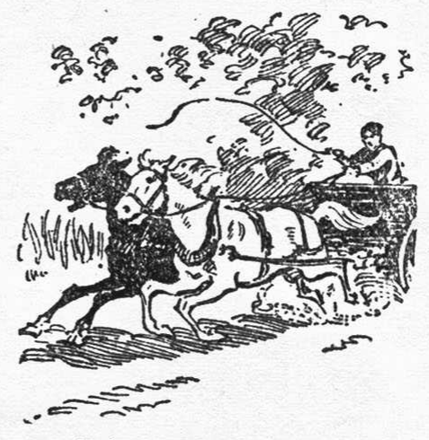
He dropped off the seat, hurled it off the wagon-box, and knelt in the bottom. Then he lashed the horses with the ends of the lines and they broke into a wild run.
“Erin go bragh, and everythin’ else!” he yelled, as they went careening wildly down the rutty, muddy road, straight into Kingsburg.
The hotel building was a mass of flames. Burning embers were exploding in the air like sky-rockets, and the panic stricken horses were running as though a thousand devils were after them.
The crowd saw them coming and tried to stop them, but as well try to stop the wind. The team whirled aside, swept the porch-post from under the wooden awning, yawed wildly, but swept back into the road, while from behind them came to yelling voices of men.
“Yee-ow!” yelped Bud. “Pow-w-wder River!”
For a mile or more they raced wildly, while Bud clutched the wagon-box to keep from being thrown out. The clouds had broken now and the road was visible. He tried to control the team, which was almost exhausted, but they were not through running yet.
A little further on they ran into a stretch of deep mud, which pulled them down to a walk. It was growing daylight now. Bud nodded with drowsiness. He was weak from exertion and loss of blood and had no mind to fight it off; he wrapped the lines around his arm and braced himself against the side of the wagon-box.
Then it seemed that the team had stopped and he heard voices. Someone was shaking him. He opened his eyes and looked up at Grandon.
“Good ol’ Grandon,” muttered Bud. “Yuh ain’t changed a bit. How are yuh?”
Grandon had a smile on his face and Bud shook his head. This could not be Grandon. He must be dreaming. Then he saw old Louie Beaudet, looking down at him; then Dr. Clarey.
“I’ve sure got lots of folks in m’ dreams,” he grinned sleepily, but no sound came from his lips.
They were talking now and he frowned over the line of conversation. It was not just like a dream, somehow. He turned his head and glanced around. The familiar interior of Louie Beaudet’s store was too real to be a dream, and if that was not enough, there was Norah Clarey sitting in a chair, looking at him.
It was a very disheveled Norah Clarey, to be sure, and her face was white and tired-looking. Little Marie Beaudet was crouched on the floor beside her, holding her hand.
Bud frowned. It was beyond him. The doctor and Grandon were talking about Joe Burgoyne. Then it began to come back to him; the fight, the runaway team. He turned back on his pillow and stared up into Henderson’s face.
“Where’s Joe Burgoyne?” asked Bud weakly.
At the sound of his voice, Grandon and the doctor came to his side and looked down at him.
“Burgoyne is in jail, Bud,” said Henderson, “and he’ll stay there for a good long time.”
Bud wrinkled his brow, as he tried to figure out how they knew about Joe’s crimes. The doctor had put his hand on Bud’s shoulder and was speaking down to him.
“Bud Conley, I don’t know how I can ever thank ye.”
“Yo’re plumb welcome,” said Bud in a puzzled voice, and then to himself. “Sure, there’s some mistake here, cowboy.”
“Ba gar, I’m tak’ back w’at I say about you, Con-lee,” said Louie Beaudet hoarsely. “I’m hope you forgive.”
“Sure,” nodded Bud, more at sea than ever. He twisted his head and looked at Norah. She was smiling at him and he grinned foolishly. He knew that he was going to wake up pretty soon and find himself out in the rain. This was too good to last. He moistened his lips with his tongue and grinned up at Grandon.
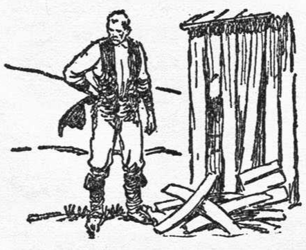
“Say, I found where all them men went, Grandon. There was a big cellar under Magee’s place, with a tunnel from the outside. I found their liquor cache, too. Joe was the leader of the whole gang. He was the one that shot McKay and the Indian, I think.”
“I know that is true,” nodded Grandon. “Burgoyne was the boss of Kingsburg, but he spent his time here watching our movements. No wonder we could never find out anything.”
“It burned down,” said Bud slowly, “and we had a reg’lar he-man fight.”
“From the looks of Burgoyne, I’d agree with that,” said Henderson.
“But how in hell——?”
Bud stopped and apologized for his profanity, but before he could continue, Grandon said, “Joe boasted of how he ruined you with the force, Conley. Magee poisoned your drink, and they stole little Marie and forced her to drink the same liquor. Joe wanted the doctor to find you and Marie together. You see, Joe wanted you away from Miss Clarey.”
“Oh!” exploded Bud, “but how——?”
“The red coat she saw was the one they stole from McKay,” interrupted Grandon. “They thought she might see it. Joe wanted an excuse to break off his engagement with Marie; so he tried to kill two birds with one stone. Joe robbed Louie and left your gun beside the safe.”
“Thasso?” blinked Bud. This was all news to him. “Did Burgoyne tell yuh all this?”
“No, he told nothing,” declared the doctor. “But, like all of his kind, he was a boaster, and he told it all to Norah.”
“Oh—yeah,” breathed Bud. “Uh—well, I don’t—” He turned his head and squinted at Norah, as though trying to find what it was all about.
“It was a wild night for us, too,” laughed the doctor, but without mirth. “Norah disappeared right after dark and we spent most of the night, hunting for her in the rain, and were on our way to Kingsburg, when you nearly ran us all down.
“Norah doesn’t know much of what happened, because they had her under all that canvas in the rear end of the wagon-box, but she recognized your voice. Burgoyne was going to take her away with him. The man must be mad.”
Bud gulped several times and shut his eyes. Norah had been in that wagon all the time! No wonder Joe Burgoyne had screamed over his loss and knocked the man down.
And he, Bud Conley, had run the gauntlet of that town; yelled like a wild fool and let that team run away, regardless, while Norah was under the canvas in the rear of that wagon-box. He shuddered and opened his eyes.
“You will not leave Eagle’s Nest now, will ye?” queried the doctor.
Bud turned his head and looked at Norah. She was smiling at him. He looked up at Grandon.
“Sure, I dunno.” He lapsed into his brogue for a moment, “I don’t know why I should stay. There’s nothin’ for me to do here. I’m no longer a policeman.”
“Still want to leave the force, Conley?”
“Still—say, what the devil’s the matter, Grandon? Am I looney, or did I dream that I resigned?”
Grandon chuckled softly. “You did resign, Conley.” It was not like Grandon to chuckle.
“Perhaps we were both a little hasty, Conley. Did you ever resign before?”
“I’ve always been fired,” said Bud ruefully.
“And I’ve never received a resignation, which may account for it,” said Grandon. “At any rate we overlooked one of the most essential things, Conley.”
“And what was that?”
“Your signature.”
“Well—I’ll—be—danged!” Bud wrinkled his nose. “I betcha I overlooked it.”
Norah got up from her chair and came over to him.
“Are you going to sign it, Bud?” she asked anxiously.
“Who me? Sign—say, what do you—” He looked up at Norah and the smile was wiped off his lips now. “I’ve lost a lot of blood, but I still retain my full quota of sense. I’ll not sign, and I’ll try to make good.”
“Conley,” said Grandon softly, “You have made good.”
“I beg your pardon, sir,” said Bud, but he was not looking at Grandon. “I wasn’t meanin’ the force, sir.”
Transcriber’s Note: This story appeared in the Early October, 1923 issue of Short Stories magazine.